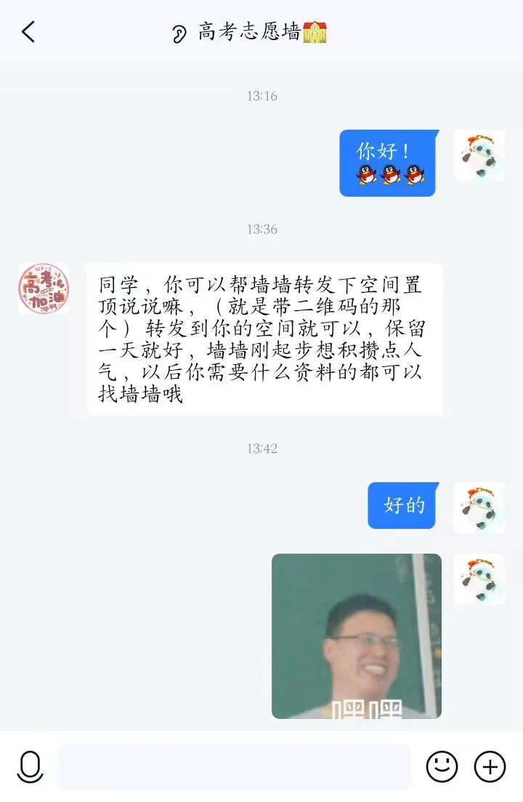

Journal · 2024-06-24
湖北省武汉市洪山区
浅秋在时光轴上添加了一条记录：高考志愿墙。
高考刚结束没几天，各大高校的迎新季还没正式开始，但民间的信息流动已经像汛期的江水一样翻涌起来了。各种「墙」——QQ 表白墙、万能墙、跳蚤市场墙——一夜之间全部转型成了高考志愿答疑中心。
这条招募帖的内容很全：高考志愿答疑、大学专业咨询、招生信息提前发布、录取最低分查询、专业调剂、转学籍。大一新生各专业资料领取（附开学资料），考证资料（四六级、教资、会计、专升本），还有技能提升（Word、PPT、Excel）。最后是一句：假期做好准备，技多不压身。
想领取资料的同学，加墙墙 QQ 好友：1700212401。
我盯着这串数字看了很久。一个 QQ 号，背后是一个素不相识的学生，在暑假的第一周就开始为即将到来的新生张罗一切。这些大学「墙」的运营者有一种奇特的使命感——他们不是官方组织，没有经费，没有头衔，但他们做出来的信息整合比某些招生简章还要好用。
这是一个完全由学生自己搭建的地下信息网络。它粗糙、混乱、充斥着广告和重复转发，但它是活的。每一届新生都是踩着上一届留下的链接和群号走进校门的。

Qian Qiu added a timeline entry: the College Application Wall.
The gaokao had just ended a few days ago. Official welcome seasons hadn't yet begun, but the underground flow of information was already surging like a river in flood season. Every kind of "wall"—QQ confession walls,万能 walls, flea market walls—had transformed overnight into college application help centers.
This recruitment post was comprehensive: gaokao application guidance, university major consultations, early release of admissions info, minimum score queries, major transfers, student record transfers. Freshman materials by major (with back-to-school starter packs), certification prep materials (CET-4/6, teaching license, accounting, associate-to-bachelor upgrade), plus skill building (Word, PPT, Excel). It ended with: prepare well during the break—more skills, less worry.
Students who want materials, add Wall-Wall on QQ: 1700212401.
I stared at that string of numbers for a long time. A QQ number. Behind it, a student I've never met, already in the first week of summer break, organizing everything for incoming freshmen. The operators of these university walls have a strange sense of mission—they're not official organizations, they have no funding, no titles, but the information they compile is often more useful than official admissions brochures.
This is an underground information network built entirely by students. It's rough, chaotic, full of ads and reposts, but it's alive. Every cohort of freshmen walks through the campus gates on the links and group numbers left by the previous cohort.
Qian Qiu a ajouté une entrée dans la timeline : le Mur des vœux universitaires.
Le gaokao venait de se terminer quelques jours plus tôt. La saison officielle d'accueil n'avait pas encore commencé, mais le flux souterrain d'informations bouillonnait déjà comme une rivière en crue. Toutes sortes de « murs »—murs de confessions QQ, murs万能, murs de brocante—s'étaient transformés en une nuit en centres d'aide aux candidatures.
Ce post de recrutement était complet : conseils pour les vœux, consultations sur les filières, informations anticipées sur les admissions, requêtes de scores minimums, transferts de majeure, transferts de dossier étudiant. Des documents par filière pour les premières années (avec kit de rentrée), des ressources de certification (CET-4/6, CAPES, comptabilité, passerelle licence), plus du perfectionnement (Word, PPT, Excel). Cela se terminait par : préparez-vous bien pendant les vacances—plus de compétences, moins de soucis.
Les étudiants intéressés, ajoutez Mur-Mur sur QQ : 1700212401.
J'ai fixé cette chaîne de chiffres longtemps. Un numéro QQ. Derrière, un étudiant que je n'ai jamais rencontré, qui, dès la première semaine des vacances d'été, organisait tout pour les nouveaux arrivants. Les opérateurs de ces murs universitaires ont un étrange sens de la mission—ce ne sont pas des organisations officielles, ils n'ont ni financement ni titre, mais les informations qu'ils compilent sont souvent plus utiles que les brochures officielles.
C'est un réseau d'information souterrain entièrement construit par les étudiants. Il est brut, chaotique, truffé de pubs et de republications, mais il est vivant. Chaque promotion de première année franchit les portes du campus sur les liens et les numéros de groupe laissés par la promotion précédente.
Qian Qiu fügte der Zeitleiste einen Eintrag hinzu: die Studienbewerbungswand.
Das Gaokao war erst vor wenigen Tagen zu Ende gegangen. Die offizielle Willkommenssaison hatte noch nicht begonnen, aber der unterirdische Informationsfluss brodelte bereits wie ein Fluss zur Flutzeit. Alle Arten von „Wänden"—QQ-Beichtwände,万能-Wände, Flohmarktwände—hatten sich über Nacht in Bewerbungshilfezentren verwandelt.
Dieser Beitrag war umfassend: Bewerbungsberatung, Studienfachkonsultationen, vorzeitige Veröffentlichung von Zulassungsinfos, Abfragen der Mindestpunktzahlen, Fachwechsel, Studentenaktenübertragung. Erstsemestermaterialien nach Fach (mit Starterpaket), Zertifizierungsressourcen (CET-4/6, Lehrlizenz, Buchhaltung, Aufstieg vom Associate zum Bachelor), plus Kompetenzaufbau (Word, PPT, Excel). Es endete mit: Bereitet euch in den Ferien gut vor—mehr Fähigkeiten, weniger Sorgen.
Interessierte Studenten, fügt Wall-Wall auf QQ hinzu: 1700212401.
Ich starrte lange auf diese Zahlenfolge. Eine QQ-Nummer. Dahinter ein Student, den ich nie getroffen habe, der bereits in der ersten Ferienwoche alles für die ankommenden Erstsemester organisierte. Die Betreiber dieser Universitätswände haben ein seltsames Sendungsbewusstsein—sie sind keine offiziellen Organisationen, sie haben keine Finanzierung, keine Titel, aber die von ihnen zusammengestellten Informationen sind oft nützlicher als offizielle Zulassungsbroschüren.
Dies ist ein vollständig von Studenten errichtetes unterirdisches Informationsnetzwerk. Es ist rau, chaotisch, voller Werbung und Weiterleitungen, aber es ist lebendig. Jeder Jahrgang von Erstsemestern betritt das Campusgelände auf den Links und Gruppennummern, die der vorherige Jahrgang hinterlassen hat.
日记随笔源文本
浅秋 ：添加时光轴记录：高考志愿墙（没加的加一下）
1：高考志愿答疑，大学专业咨询，提前发布大学招生信息，大学录取最低分查询、专业调剂、转学籍等信息
2：大一新生各专业资料领取（附有开学资料哇！）
3：还有各种考证资料等（四六级 教资 会计 专升本等）
技能提升（Word PPT Excel）
想领取资料的同学
加墙墙QQ好友：1700212401
假期做好准备！技多不压身。